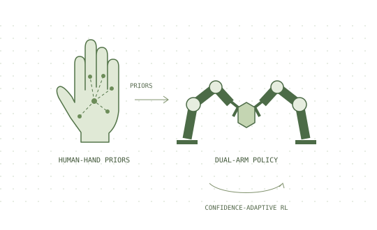

HUMAN PRIORS → ROBOT POLICIES01

Contact-rich manipulation Research project
PriDex
Human priors for dexterous interaction.
Exploring dual-arm contact-rich manipulation with human-hand priors and confidence-adaptive reinforcement learning fine-tuning.
Tasks include pouring, wiping a plate, unscrewing a cap, and sweeping.
Research in progress.